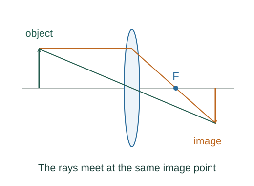

Derive spherical refraction, lensmaker and instrument magnification
For a ray at height h, its small object and image angles are h/p and h/i, while the surface normal tilts h/R. Linearized Snell gives n₁(h/p + h/R) = n₂(h/R − h/i).
What the symbols mean
p: real object distance; i: real image distance; R: signed surface radius; D: chosen near-point reference; fob,fey: objective and eyepiece focal lengths.
When this applies
Paraxial rays, thin lens in air, signed radii positive when the centre is on the outgoing side. Magnifier formulas use relaxed-eye viewing.
Developing the argument

Linearize refraction geometry
For a ray at height h, its small object and image angles are h/p and h/i, while the surface normal tilts h/R. Linearized Snell gives n₁(h/p + h/R) = n₂(h/R − h/i).
Apply refraction twice
For a thin lens, the first image is the second surface’s virtual object. Add the two surface equations so that the internal image-distance terms cancel.
Compare central-ray triangles
The image height divided by object height is the signed ray-slope ratio. The height-ratio definition becomes a distance ratio.
Compare angular sizes for a magnifier
A naked-eye object at reference distance D subtends approximately h/D. At a magnifier focus it subtends h/f while the emerging light is parallel.
Combine objective and eyepiece
A microscope objective gives approximately −s/fob lateral magnification, followed by D/fey angular magnification. A telescope’s focal-plane image height is fobθin, so θout ≈ −fobθin/fey.
A worked example
A relaxed-eye magnifier with f = 5 cm and conventional D = 25 cm has angular magnification 5.
Derivation behind this calculation ↗A point to keep straight
The 25 cm reference is a viewing convention, not a fundamental constant; finite-distance viewing changes the magnifier formula.
Check the assumptions and derivation ↗